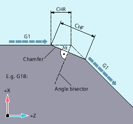
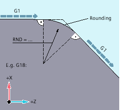
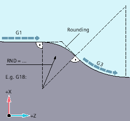

Contour corners within the active working plane can be executed as roundings or chamfers.
For optimum surface quality, a separate feedrate can be programmed for chamfer/rounding. If a feedrate is not programmed, the standard path feedrate F will be applied.
The "Modal rounding" function can be used to round multiple contour corners in the same way one after the other.
Chamfer the contour corner:
G... X... Z... CHR/CHF=<value> FRC/FRCM=<value>G... X... Z...Round the contour corner:
G... X... Z... RND=<value> FRC=<value>G... X... Z...Modal rounding:
| G... X... Z... RNDM=<value> FRCM=<value> | |
| ... | |
| RNDM=0 |
| Note |
The technology (feedrate, feedrate type, M commands, etc.) for chamfer/rounding is derived from either the previous or the next block dependent on the setting of bit 0 in machine data MD20201 $MC_CHFRND_MODE_MASK (chamfer/rounding behavior). The recommended setting is the derivation from the previous block (bit 0 = 1). |
| Chamfer the contour corner | |
| Length of the chamfer (unit corresponding to G70/G71) | |
| Chamfer the contour corner | |
| Width of the chamfer in the original direction of motion (unit corresponding to G70/G71) | |
| Round the contour corner | |
| Radius of the rounding (unit corresponding to G70/G71) | |
| Modal rounding (rounding multiple contour corners in the same way one after the other) | |
| Radius of the roundings (unit corresponding to G70/G71) | |
Modal rounding is deactivated with | ||
| Non-modal feedrate for chamfer/rounding | |
| Feedrate in mm/min (with active G94) or mm/rev (with active G95) | |
| Modal feedrate for chamfer/rounding | |
| Feedrate in mm/min (with active G94) or mm/rev (with active G95) | |
| ||
| Note |
Chamfer/rounding too highIf the values programmed for chamfer (CHF/CHR) or rounding (RND/RNDM) are too high for the contour elements involved, chamfer or rounding will automatically be adapted:
|
| Note |
Chamfer/rounding not possibleNo chamfer/rounding is performed if:
|
| Note |
FRC/FRCMFRC/FRCM has no effect if a chamfer is traversed with G0; the command can be programmed according to the F value without error message. FRC is only effective if a chamfer/rounding is programmed in the block or if RNDM has been activated. FRC overwrites the F or FRCM value in the current block. The feedrate programmed under FRC must be greater than zero. FRCM=0 activates the feedrate programmed under F for chamfer/rounding. If FRCM is programmed, the FRCM value will need to be reprogrammed like F on change G94 ↔ G95, etc. If only F is reprogrammed and if the feedrate type FRCM > 0 before the change, an error message will be output. |
Example 1: Chamfer between two straight lines
|  |
|
Programming can be performed in two ways:
Programming with CHR
| Program code | |
|---|---|
| ... | |
| N30 G1 Z… CHR=2 FRC=100 | |
| N40 G1 X… | |
| ... |
Programming with CHF
| Program code | |
|---|---|
| ... | |
| N30 G1 Z… CHF=2(cosα*2) FRC=100 | |
| N40 G1 X… | |
| ... |
Example 2: Rounding between two straight lines
|  |
|
| Program code | |
|---|---|
| ... | |
| N30 G1 Z… RND=2 FRC=50 | |
| N40 G1 X… | |
| ... |
Example 3: Rounding between straight line and circle
The RND function can be used to insert a circle contour element with tangential connection between the linear and circle contours in any combination.
|  |
|
| Program code | |
|---|---|
| ... | |
| N30 G1 Z… RND=2 FRC=50 | |
| N40 G3 X… Z… I… K… | |
| ... |
Example 4: Modal rounding to deburr sharp workpiece edges
| Program code | Comment |
|---|---|
| ... | |
| N30 G1 X… Z… RNDM=2 FRCM=50 | ; Activate modal rounding.Radius of rounding: 2 mmFeedrate for rounding: 50 mm/min |
| N40... | |
| N120 RNDM=0 | ; Deactivate modal rounding. |
| ... |
Example 5: Apply technology from following block or previous block
MD20201 Bit 0 = 0: Derived from following block (default setting!)
| Program code | Comment |
|---|---|
| N10 G0 X0 Y0 G17 F100 G94 | |
| N20 G1 X10 CHF=2 | ; Chamfer N20-N30 with F=100 mm/min |
| N30 Y10 CHF=4 | ; Chamfer N30-N40 with FRC=200 mm/min |
| N40 X20 CHF=3 FRC=200 | ; Chamfer N40-N60 with FRCM=50 mm/min |
| N50 RNDM=2 FRCM=50 | |
| N60 Y20 | ; Modal rounding N60-N70 with FRCM=50 mm/min |
| N70 X30 | ; Modal rounding N70-N80 with FRCM=50 mm/min |
| N80 Y30 CHF=3 FRC=100 | ; Chamfer N80-N90 with FRC=100 mm/min |
| N90 X40 | ; Modal rounding N90-N100 with F=100 mm/min (deselection of FRCM) |
| N100 Y40 FRCM=0 | ; Modal rounding N100-N120 with G95 FRC=1 mm/rev |
| N110 S1000 M3 | |
| N120 X50 G95 F3 FRC=1 | |
| ... | |
| M02 |
MD20201 Bit 0 = 1: Derived from previous block (recommended setting!)
| Program code | Comment |
|---|---|
| N10 G0 X0 Y0 G17 F100 G94 | |
| N20 G1 X10 CHF=2 | ; Chamfer N20-N30 with F=100 mm/min |
| N30 Y10 CHF=4 FRC=120 | ; Chamfer N30-N40 with FRC=120 mm/min |
| N40 X20 CHF=3 FRC=200 | ; Chamfer N40-N60 with FRC=200 mm/min |
| N50 RNDM=2 FRCM=50 | |
| N60 Y20 | ; Modal rounding N60-N70 with FRCM=50 mm/min |
| N70 X30 | ; Modal rounding N70-N80 with FRCM=50 mm/min |
| N80 Y30 CHF=3 FRC=100 | ; Chamfer N80-N90 with FRC=100 mm/min |
| N90 X40 | ; Modal rounding N90-N100 with FRCM=50 mm/min |
| N100 Y40 FRCM=0 | ; Modal rounding N100-N120 with F=100 mm/min |
| N110 S1000 M3 | |
| N120 X50 CHF=4 G95 F3 FRC=1 | ; Chamfer N120-N130 with G95 FRC=1 mm/rev |
| N130 Y50 | ; Modal rounding N130-N140 with F=3 mm/rev |
| N140 X60 | |
| ... | |
| M02 |